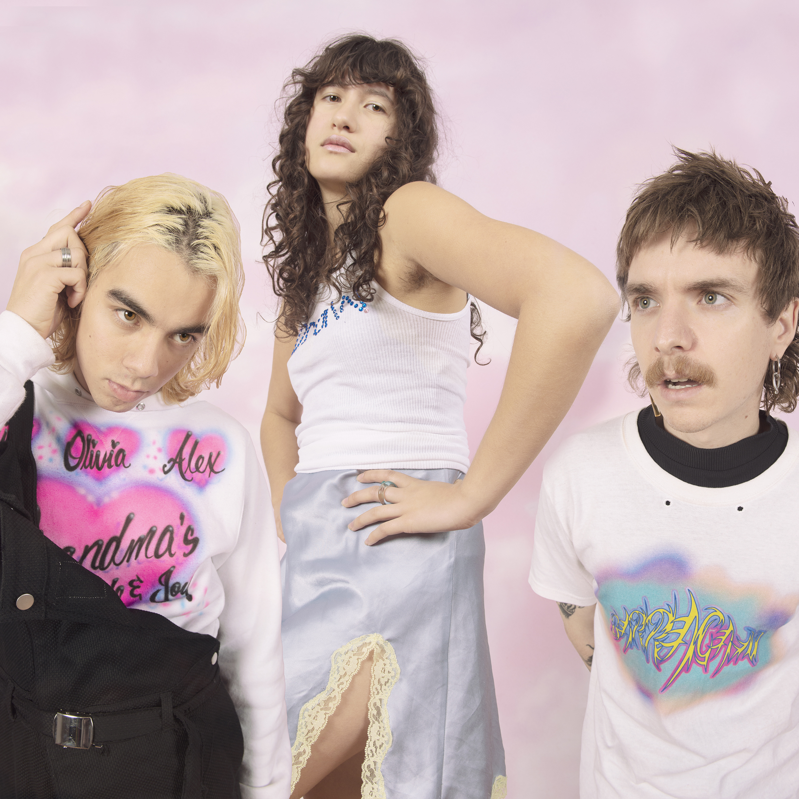

29. Jan 2020 | Gorrilla vs Bear
PREMIERE: COUCH PRINTS – Of Drawing

New York trio Couch Prints emerged, seemingly fully-formed, last summer with their irresistible first single "Tell U", which we called a "softly glowing track that drips with yearning and smoldering emotion." Today, the group follows up on the promise of that auspicious debut with another shimmering beacon of their plush, dreamily danceable synth-pop in new single "Of Drawing". The luminous new track explores similar, bittersweet themes of intense desire and heartache, making it equally suited for daydreamy bedroom introspection or late-night dancefloor catharsis.
24. Jan 2020
"Of Drawing" Lyrics
Every moment I try to escape
Every horror that i couldn’t face
Can’t wait for the feeling to come back
Couldn’t wait for the feeling to come back
I see the future that we’ll never make
Every city that we’ll never take
Can’t wait for the feeling to come back
Couldn’t wait for the feeling to come back
And when you find the covers off your legs
My nails drip with saliva can’t behave
There’s still a sense of drawing
Still a scent about you
I might lie to have something to say
All of the hours I fit in a day
All of the moments I try to replace
Can’t wait for the feeling to come back
Couldn’t wait for the feeling to come back
There’s not a second I’m sorry to waste
All of the nights that turned into days
Can’t wait for the feeling to come back
Couldn’t wait for the feeling to come back
And when you find the covers off your legs
My nails drip with saliva cant behave
And when you find the covers off your legs
My nails drip with saliva cant behave
There’s still a sense of drawing
Still a scent about you
I might lie to have something to say
There;s still a sense of drawing
Still a scent about you
I might lie to have something to say
10. July 2019 | Gorrilla vs Bear
PREMIERE: COUCH PRINTS – TELL U
Queens-based trio Couch Prints make their alluring debut with “Tell U“, a balmy, softly glowing track that drips with yearning and smoldering emotion. According to the band, the song came together after a series of big moves — Denver to France and back, a serendipitous meeting in Paris with singer Jayanna that set things in motion, with everyone ultimately ending up in New York — and is a reflection of “that feeling of transience and movement and leaving the past behind; whether that’s moving homes or ending a relationship or just changing yourself day by day.” Very promising stuff from the young group, we’re psyched to hear what they do next.
01. July 2019
"Tell U" Lyrics
Always searching for a quote to follow
Red lips don’t want to bother
Where are you
The thought it dwindles
In time I always spin
What can I tell you about the cold sweet ground
Held so firm with my toes fanned out
How could I tell you about the warm release
No truth only honesty
I thought I’d tell you I adore this lie
Place to rest oh the future is so bright
Front to back I drive no ending
For squares thats my temptation
I was sure I wanted you
Before I decided who
What can I tell you about the cold sweet ground
Held so firm with my toes fanned out
How could I tell you about the warm release
No truth only honesty
I thought I’d tell you I adore this lie
Place to rest oh the future is so bright
What can I tell you about the cold sweet ground
Held so firm with my toes fanned out
How could I tell you about the warm release
No truth only honesty
I thought I’d tell you I adore this lie
Place to rest oh the future is so bright